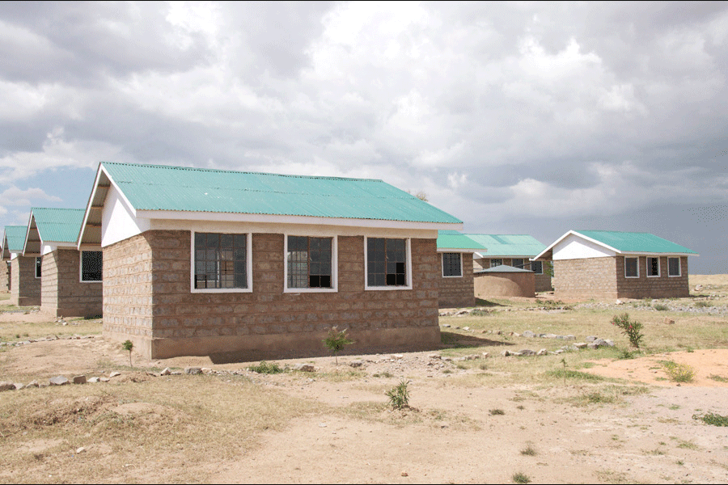

Free the Children is an international organization based out of Canada. They are all about helping kids achieve their fullest potential as being people motivated to make a change. They have a couple different branches such as “Adopt a Village,” “We Day,” and “We Act.”
Free the Children, has done work in Ecuador, Ghana, Haiti, India, Kenya, Nicaragua, Rural China, Sierra Leone, and even in local communities in the United States and Canada. They do everything from building schools, to making wells, to creating alternative income plans, to starting women's groups in various communities.
Here are some pictures of schools they have built in Kenya, one of which, Audrey Shapiro (co-creator of this website) visited.
Informartion about the creators of the website